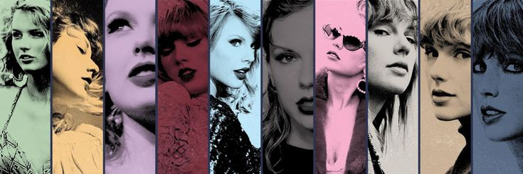

Taylor Swift
Mastermind, Enigmatic, Groundbreaking
❝
People haven't
always been there
for me but music
always has.
❞
Run The World: How Taylor Swift Has Become One Of The Most Powerful Women In Music History
her music
“We can’t talk about Taylor Swift’s success without acknowledging her preternatural ability to write songs that are familiar yet distinctive, accessible but not trite,” Associate Professor and Chair of Popular Music, Toby Koenigsberg, says.
“It’s important to emphasize that it’s incredibly difficult to write a song like the songs Taylor writes,” he adds. “It's difficult to do even one time. To do it across an entire album is much harder still, and she has been doing it on album after album for close to two decades now.”
“Taylor Swift is really good at writing music,” Associate Professor of Music Theory Drew Nobile notes. “That's indisputable. She knows how to craft a melody. The subjects of her songs are very relatable. I’m a 38-year-old male and I can listen to her songs, even those she wrote when she was 20, and connect with them.”
her versatility
From country, to pop, to indie folk, Swift has expertly navigated switching genres throughout her career. Nobile and Koenigsberg say this ability to evolve is difficult to master, yet she did, and managed to still sound like “Taylor.”
Originally a country artist, she first dipped her toe into pop with the album, Red. She collaborated with Max Martin, a highly respected producer and songwriter, on the album. With a resume packed with megahits such as Britney Spears’ “...Baby One More Time” and The Backstreet Boys’ “I Want it That Way,” Martin co-wrote and produced three songs on Red, including Swift’s number-one pop hit “We Are Never Ever Getting Back Together.” While pop in nature, Red still incorporated banjo instrumentation and Swift maintained her country twang.
In an unprecedented move, Swift almost entirely abandoned the country genre with her next record, 1989, Koenigsberg notes. “Rather than the gradual evolution over a period of a few albums that you might expect, she transitioned quickly,” he observes. “And when she did it, she knocked it out of the park. A new Taylor in a new genre emerged fully formed, and already at its artistic zenith.”
Swift, however, continues to tap into her country roots through her expert storytelling, a hallmark of country music. “She is a great storyteller whether she is telling a fictional story about someone who has murdered her husband or a story about her own breakup,” Nobile said. “She can weave that narrative in her lyrics and that has allowed the fans who liked her because she was a country singer to stick around.”
When evermore and folklore were released in 2020, the world witnessed Swift, once again, mastering a genre switch, from pop to indie folk. “Oftentimes fans will rebel if artists stray from their original genre, and somehow, she’s avoided that and it’s incredible,” Nobile added.
her business acumen
Success in the music industry isn’t merely about music, it’s about business, and “Taylor’s business skills are prodigious,” says Koenigsberg. From her ability to expertly craft her brand to her strategic moves, she has proven to be both a successful artist and businesswoman.
For example, her decision to produce a film of her Eras Tour had phenomenal results. The movie, that went to the theatres in October, is the “highest grossing concert film” (Forbes) earning $92.8 million in its opening weekend. “People are continually surprised by the results being so successful, and I think that speaks to the special capabilities she has to predict such things,” Koenigsberg says of Swift’s ability to know how her fans would respond to a concert film.
Swift’s social media marketing also launches her into the upper echelon of music artists as she is able to craft a brand that is relatable and authentic to fans. She did it from the beginning-- connecting with her fan base on social media in the country era, which was unusual at the time.
In a more recent move, she partnered with Google to create a puzzle to reveal the track titles of new songs released from the “vault,” expertly publicizing her music and by requiring fans to Google her to see the titles, boosting her standing in search-engine trends.